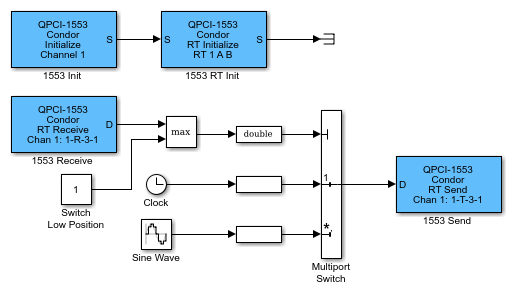

The following example uses QPCI-1553 blocks to illustrate how you can configure a Remote Terminal from a Simulink® Real-Time™ model. For standard initialization, use the QPCI Initialize block. Use the QPCI RT Initialize block to set up the board for Remote Terminal operation.
You can run this example on a target computer that has a QPCI-1553 board. If your target computer uses a different board, such as a PCI-1553 board, replace the QPCI-1553 blocks with the blocks for your board.

The QPCI-1553 RT Initialize block configures the board for Remote
Terminal operation on channel 1 of the board. The QPCI-1553 RT
Initialize block configures the Remote Terminal 1 to monitor buses A and B
for incoming messages and configure the active transmit and receive sub addresses. The
QPCI-1553 Receive and Send blocks use sub address 3 for both transmit and receive. Note
the message parameters notation 1-R-3-1 on the QPCI-1553 Receive and
Send blocks. This notation has the format:
remote terminal-R/T-subaddress-number of words
Remote terminal — Indicates the particular Remote
Terminal.
R/T — Indicates that the command is for receive
(R) or transmit (T).
Subaddress — Indicates the sub address for the
message.
Number of words — Indicates the number of 16-bit integers to
receive as the data part of a message.
This notation is shorthand that indicates that Remote Terminal 1 is to receive
messages on sub address 3 with a length of one word. The incoming message consists of
one 16-bit integer with a value of 1 or 2. The Multiport Switch block
uses this input to specify either clock or sine wave data.
A QPCI-1553 board has a processor that handles the actual transmission and reception of messages. The QPCI-1553 Receive block reads the board receive message buffer for the specified Remote Terminal and sub address. The QPCI-1553 Send block writes data to the board transmit buffer.